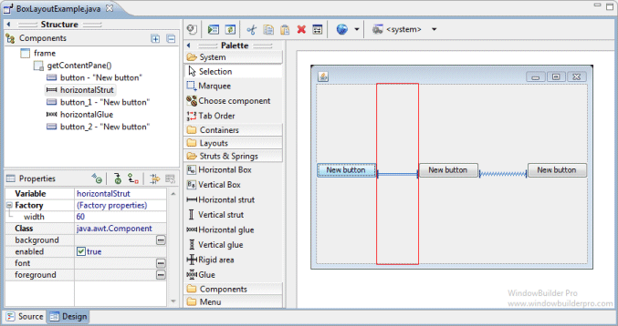
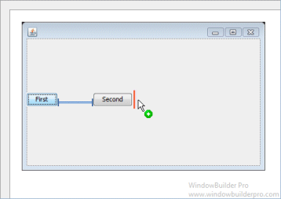
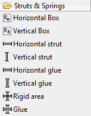
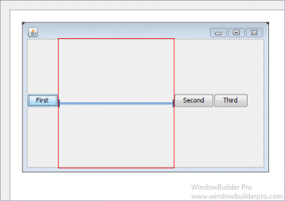
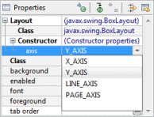
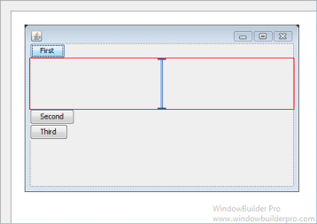
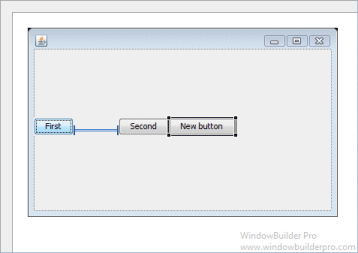

BoxLayout attempts to arrange components at their preferred widths (for horizontal layout) or heights (for vertical layout). For a horizontal layout, if not all the components are the same height, BoxLayout attempts to make all the components as high as the highest component. If that's not possible for a particular component, then BoxLayout aligns that component vertically, according to the component's Y alignment. By default, a component has a Y alignment of 0.5, which means that the vertical center of the component should have the same Y coordinate as the vertical centers of other components with 0.5 Y alignment. Similarly, for a vertical layout, BoxLayout attempts to make all components in the column as wide as the widest component. If that fails, it aligns them horizontally according to their X alignments.
Main Features
- Select BoxLayout from the Layouts palette and drop it on a Window or Composite

- Graphical feedback is provided for all drop and move interactions

- Struts & Springs palette gives easy access to struts, springs (glue), rigid areas and boxes

- Graphically show area occupied by struts and springs (glue)

- Graphically resize struts and rigid areas via dragging

- Direct-edit (hit space bar) struts and rigid areas to resize them


- Resize struts and rigid areas using the Property Pane

- Orientation can be specified using the Property Pane
 
- Widget alignment within the BoxLayout can be set using the Property Pane

- Note that struts and rigid areas can be used as invisible spacer objects in other layouts as well


Graphical Feedback
- When moving a widget or adding a new widget, the current drop
point is highlighted in red



- Resize struts and rigid areas by dragging or direct edit